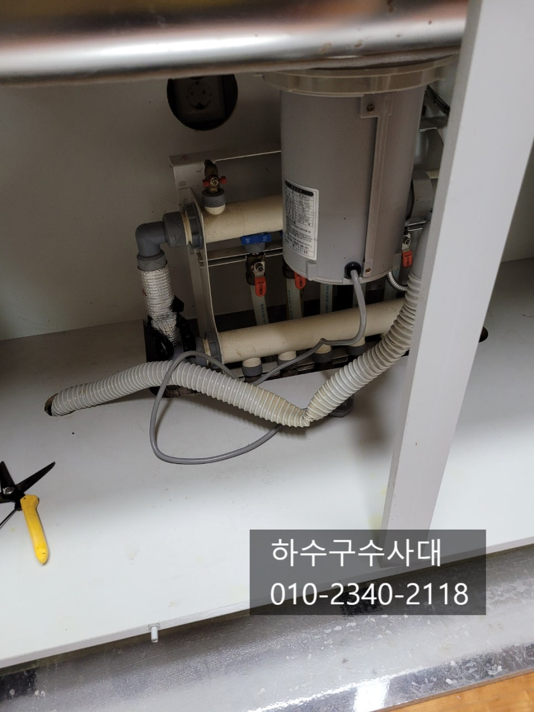
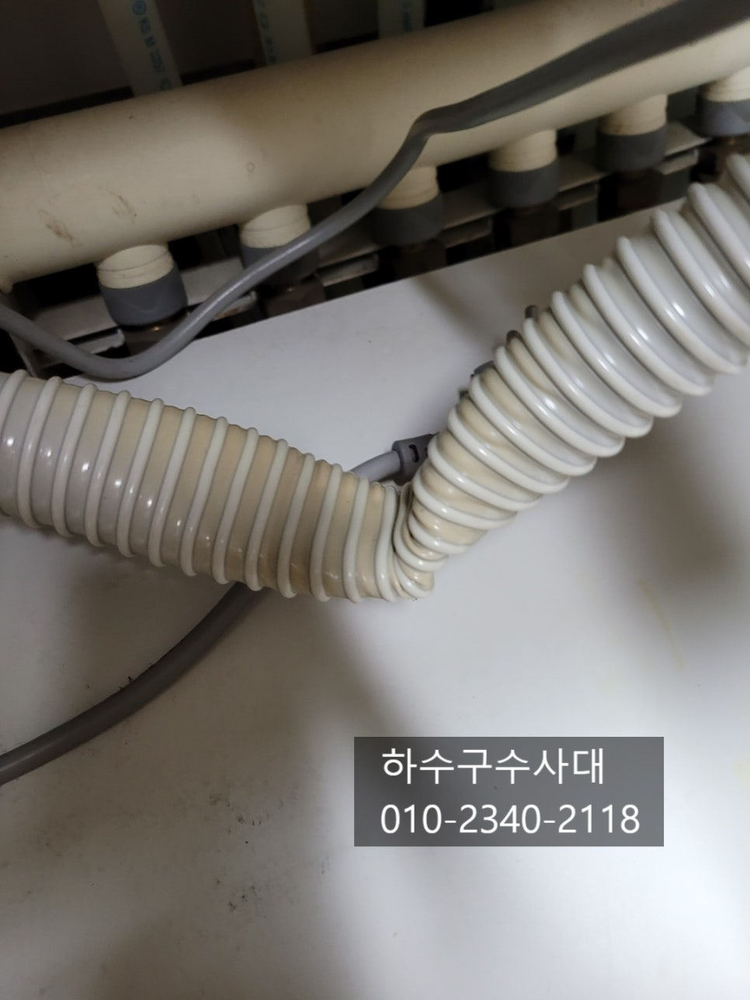
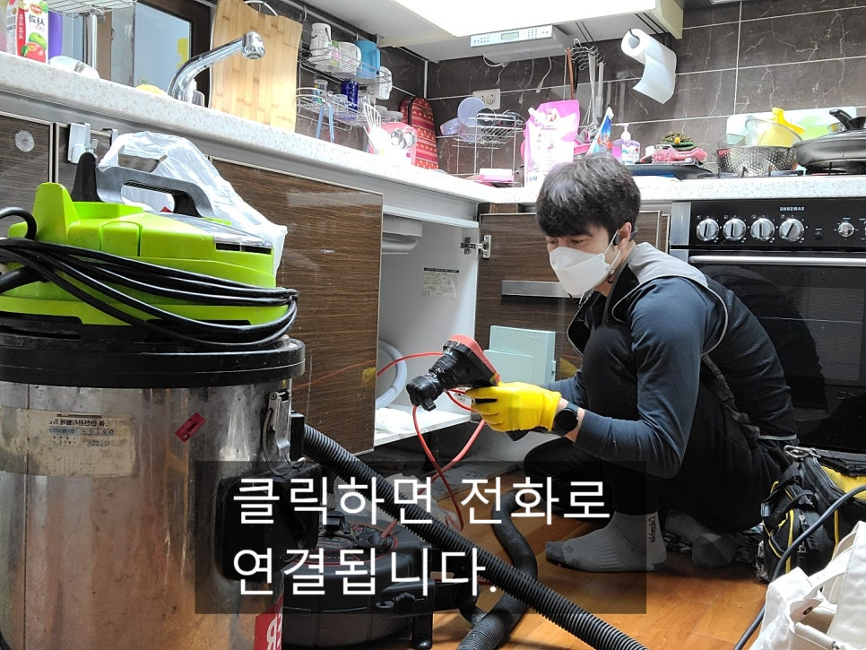
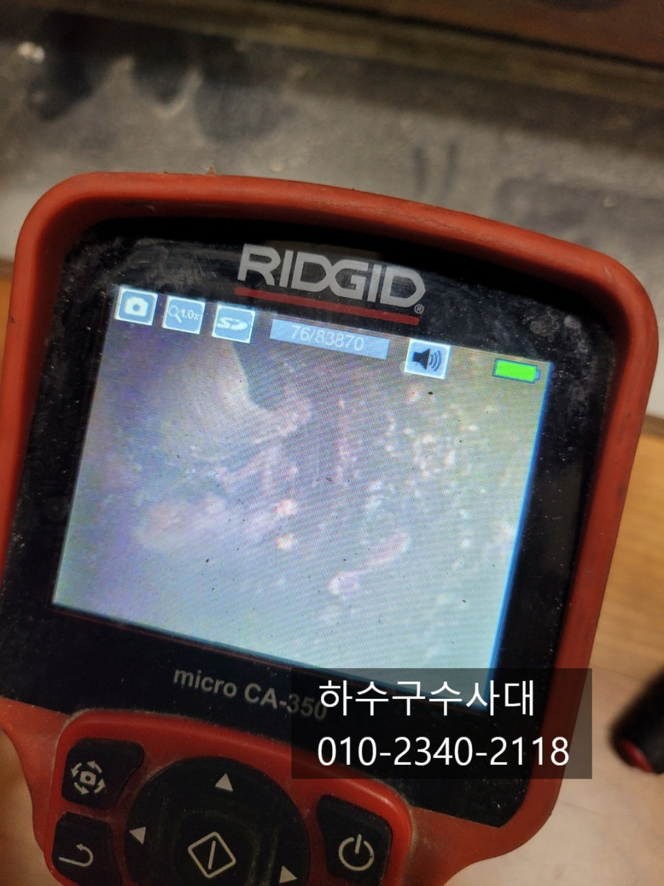
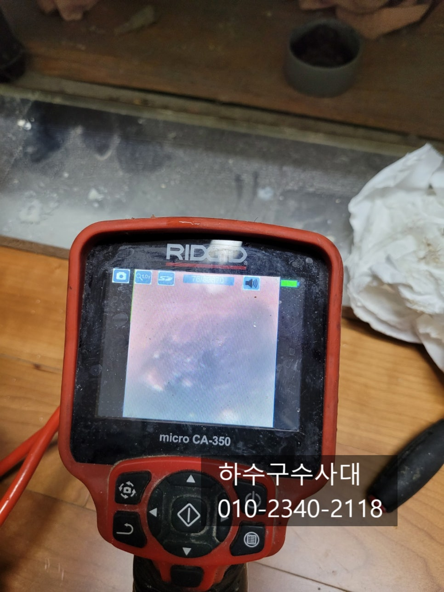
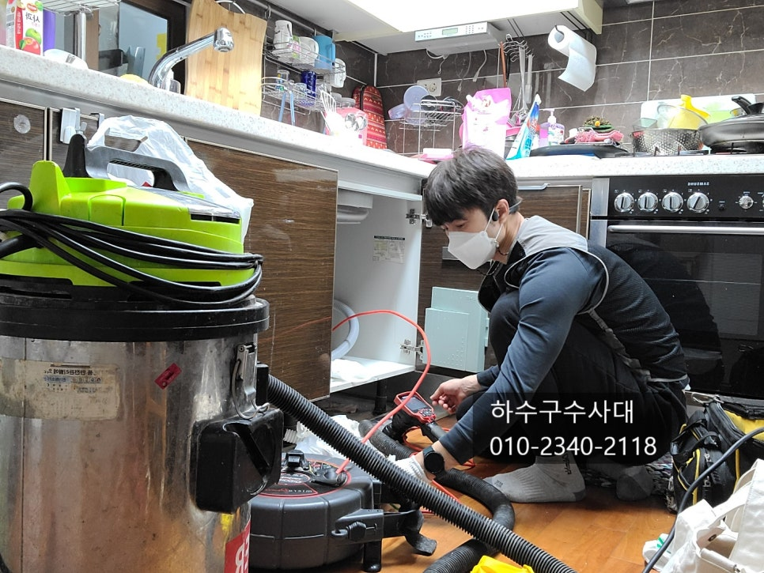
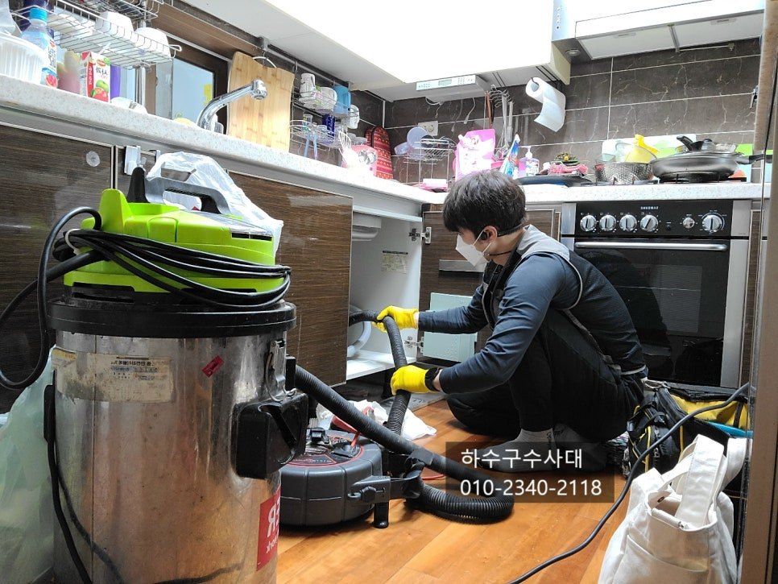

🏠 수지구하수구막힘 상현동 신봉동 성복동 싱크대막힘
용인 신봉동 싱크대막힘 전문 시공 후기

📋 작업 개요
- 위치: 용인 신봉동, 신봉동, 용인
- 서비스 유형: 싱크대막힘, 하수구막힘, 배관막힘, 누수수리, 뚫는업체, 배관청소
- 작업 일시: 2021. 12. 31. 0:39
- 업체명: 하수구수사대 (010-5615-2118)
🔍 문제 상황
수지구하수구막힘 상현동 신봉동 성복동 싱크대막힘
안녕하세요
"하수구수사대"입니다.
본격적인 겨울이 시작되고 강추위와 함께
하수구가 얼어 막히는 일이 빈번하게 일어나고 있습니다.
작년이 열흘넘게 이어진 한파로 정말 많은곳이
얼었는데 올해는 작년만못하지만 아직 방심하긴 이른시기입니다.
아무쪼록 예방만이 사고?를 막는 최선의 선택인거 같아요
오늘현장은 싱크대막힘 현장을 다녀왔는데요
싱크대호스가 심하게 꺽여있었고 고객님께서
일전에 밑에집에 누수문제로 골치아픈일이 있었기에
하수구가막히면 혹시나 또
누수가 되진 않을까 걱정이 많으셨어요.
싱크대물이 잘 내려가지않아 원인을 정확하게
파악하고 근본적인 해결을 하시려고 "하수구수사대"에
직접연락을 주셨답니다.
설비업체가 많지만 대부분 종합설비업체로 여러가지
일을 하기때문에 전문적인 장비보다는 임시방편으로
뚫어주는 곳이 대부분인데요 싱크대하수구의 경우

🔎 원인 분석
💡 전문가 진단: 하수구수사대010-2340-2118
대부분 기름덩어리때문에 막히는 경우가 많아 근본적인
원인을 찾아 해결하는것이 중요해요.
특히나 배관을 내시경카메라로 확인하는게 가장중요한데요
물만 나간다고 해결된것이 아니기 때문입니다.
혹시나 하수구배관에 이물질이 남아 있다면
언제 또 막힐지 모르기 때문이에요.
내시경카메라로 하수구내부를 들여다보니 기름슬러지가
많이 쌓여있었습니다. 고객님께서도 20년동안 사용을
하다보니 기름이 많이 쌓여있을것으로 예상은 하셨답니다.
보통은 배관구배가 좋지않아 물이 고여있는 구간에
기름이 많이 쌓이게 되는데 이러한 것을 사전에
예방하려면 한달에 한번 펑크린을 부어 관리를 해주는것도
좋은 방법입니다.
또는 설거지후 마지막에 물을 충분히 내려주는것도 좋아요.
아파트는 같은 라인이라 배관구조는 똑같지만 배관의 구배는
집집마다 다를수 있습니다. 요즘은 신규아파트들도
2년만에 막히는 경우가 생기는데 대부분 배관을 너무길고
여러번 꺽여 내려가게 만들다 보니 2년이 되어 배관에
기름슬러지가 많은 아파트 단지도 있답니다.

🔧 작업 과정
하지만 하수구배관은 눈에 보이지 않으니
내시경카메라로 보지않는이상 구조를 알고 관리하기란
쉽지 않은 일입니다.
배관내부에 기름이 많이 묻어 나오는데요
이렇게 기름이 배관에 쌓이게 되면 악취또한 심하게 나는데요
싱크대하부장을 열었을때 악취가 심하다면 하수구배관상태를
의심하셔야해요. 또는 물을 바가지에 받아서
한번에 내렸을때 하수구쪽에서 물이 새어나오지는 않는지
체크를 해보는것도 좋습니다.
하수구수사대
010-2340-2118
하수구를 뚫는 장비를 몇가지가 있는데요
가장적합한 장비를 플렉스샤프트장비로 싱크대하수구청소에
가장 좋은 장비입니다. 싱크대하수구는 대부분 50mm
배관을 많이 쓰는데 플렉스샤프트는 50mm배관에
최적화 되어있는 장비입니다^^
플렉스샤프트와 함게 내시경카메라를 보면서
작업이 이루어 지기때문에 깨끗하고 완벽하게 작업이
이루어 진답니다^^
간혹 배관에 싱크대호스같은 이물질이 발견되기도 하는데요
내시경카메라가 없다면 전혀 볼수 없기때문에
무리하게 작업을 하다가 생각치도 않은 사고가 날수 있답니다.
예를들어 장비가 하수구에 박혀 빼지 못하는 그러한사고도
종종 생기고 있답니다.
하수구청소가 끝난뒤 배관구조를 파악하는것도 중요한데요
배관구조를 알아두면 관리하는데 많은 도움이 되기때문입니다.
위사진처럼 배관에 물이 고여있다면 기름이 정체되기 때문에
기름이 잘 쌓일수밖에 없는데요 설거지 후 물을
충분히 내려주고 한달에 한번씩 펑크린을 부어
기름기를 제거해준다면 더이상 막히는 일은 없을겁니다^^
배관이 깨끗하고 완벽하게 뚫렸다면 물을 받아서


✅ 작업 완료
내려주는 테스트를 해주는데요 배관이 뻥!!뚫려있다면
내려가는 소리부터가 다르답니다.
이러한 소리가 나지않는다면 한번쯤 하수구쪽을
들여다 보는것이 좋은데요 혹시모를 누수가 있을수
있기때문에 가끔씩은 테스트를 해주는것이 좋답니다.
"하수구수사대"는 수도권전지역에서
활동하고 있으니 하수구막힘으로 고민중이시라면
언제든지 연락주세요^^




⚠️ 베란다 누수 및 방수 관리 방법
- ✅ 비가 많이 올 때 창틀 주변이나 아래층 천장에 얼룩이 생기는지 정기적으로 확인해 보세요.
- ✅ 우수관 주변 실리콘 마감이 들뜨거나 깨진 틈새가 있는지 손상 여부를 수시로 체크하세요.
- ✅ 베란다 바닥 타일의 줄눈(메지)이 소실되면 그 틈으로 물이 침투하여 누수가 유발됩니다.
- ✅ 누수 의심 증상 발견 시 방치하면 아래층 손실이 커지므로 즉시 전문가의 진단을 받으십시오.
💡 핵심 정리
- 확실한 장비 작업(내시경 점검 및 샤프트 스케일링)으로 원인을 뿌리 뽑습니다.
- 작업 후 1년 이내에 동일한 부위 재발 시 100% 무상 A/S 서비스를 보장합니다.
- 서울 · 경기 · 인천 전 지역에 24시간 언제든 긴급 출동할 수 있도록 항시 대기 중입니다.
❓ 자주 묻는 질문 (FAQ)
🚨 용인 신봉동 싱크대막힘 문제로 고민이신가요?
정확한 원인 진단과 확실한 시공으로 재발 없는 해결을 약속드립니다.
24시간 긴급 출동 | 서울 · 경기 · 인천 전지역 | 1년 내 재발 시 무상 A/S